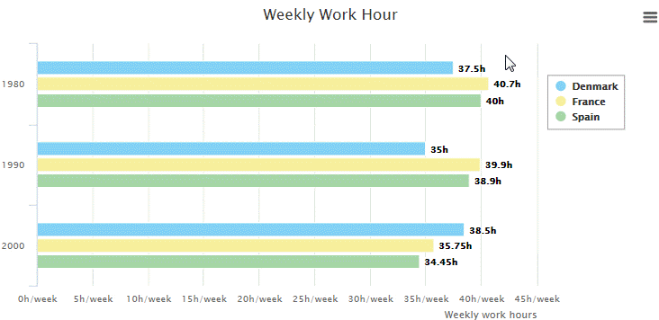
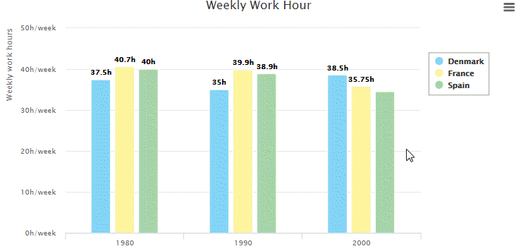

The comparison is the process to estimate the similarities or not
between two elements or more.
Line charts, Bar charts, bubble chart, and tree maps are often used
to compare data.
The bubble chart is very useful to compare elements using up to four
variables.
The following demo visualizes a comparison of OECD countries using
four variables:
The color is used as a variable in this demo to show how each country is under the safe fat/sugar intake zone
Bar charts are used to compare categories with discrete data.
The bars’ lengths are a good visual for comparison. According to the
chart, in 2000, Denmark has the longest work hours per week, but in
1980 and 1990 it has the lowest working hours per week compare to
France and Spain.
In a case of close data, feel free to provide an interactive zooming capability or/and a fix labels on each bar:

Column charts are used to compare categories with discrete data.
The columns’ lengths are a good visual for comparison. According to
the chart, in 2000, Denmark has the longest work hours per week, but
in 1980 and 1990 it has the lowest working hours per week compare to
France and Spain.
In a case of close data, feel free to provide an interactive zooming capability or/and a fix labels on each bar:

Line chart often used to compare series with continuous data.
The following demo allows us to see Asia has the biggest value over
time, and also the biggest jump from 1900 to 2012.
Tree map is a great choice for comparison, especially to show how
big is the difference between categories, but also make the chart
compact and without many distractions by removing axes, axes’
labels, and a legend.
In this demo, it is easy to see that Lebanon has the biggest number
of refugees per capita, where Sweden has the smallest number of
refugees per capita.